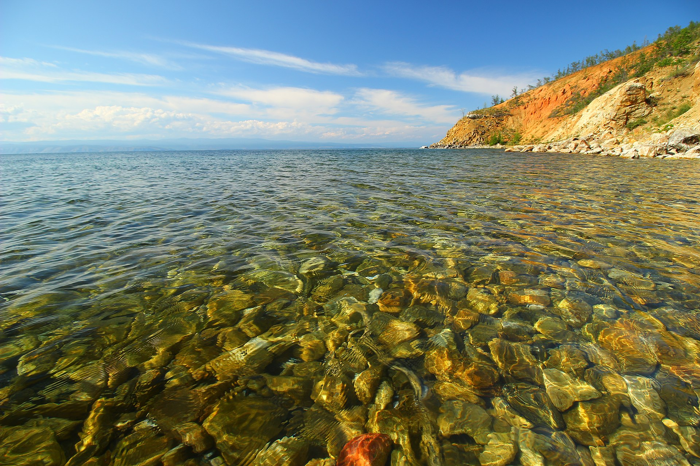
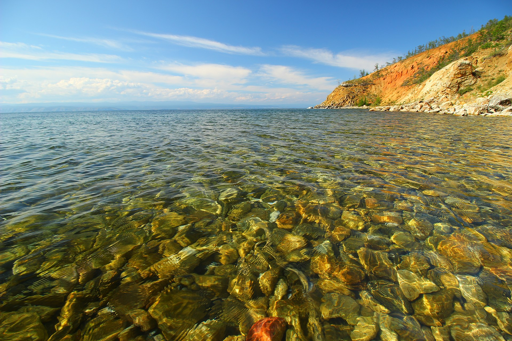
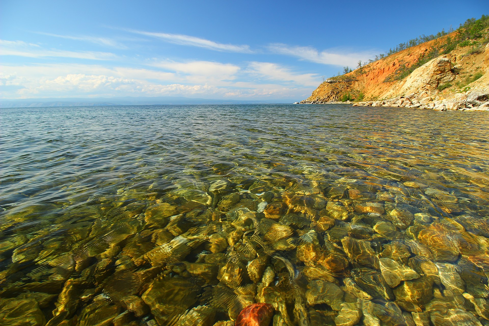

Байка́л (бур. Байгал далай) — озеро тектонического происхождения в южной части Восточной Сибири площадью 31 722 км², самое глубокое озеро на планете, крупнейший природный резервуар
пресной воды и самое большое по площади пресноводное озеро Евразии.
Озеро и прибрежные территории являются уникальным биогеоценозом, бо́льшая часть видов животных эндемична. Озеро имеет сток — реку Ангара.
Содержание
|
|---|
Находится в центре Азии на границе Иркутской области и Республики Бурятия в Российской Федерации. Озеро протянулось с юго-запада на северо-восток на 636 км в виде гигантского полумесяца.
Ширина водоёма колеблется в пределах от 24 до 79 км. Дно Байкала в самой глубокой его части на 1187 метров ниже уровня Мирового океана. Высотная отметка уреза воды Байкала установлена (так как Байкал
зарегулирован) в пределе 456—457 метров над уровнем моря, но в Тихоокеанской системе высот. В результате «реальный» уровень Байкала фактически неизвестен:
Площадь водной поверхности Байкала — 31 722 км² (без учёта островов), что примерно равно площади таких стран, как Бельгия или Нидерланды. По площади водного зеркала Байкал занимает седьмое место
среди крупнейших озёр мира. Площадь водосборного бассейна — 571 тыс. км². Длина береговой линии — 2000 км.
Озеро находится в своеобразной котловине, со всех сторон окружённой горными хребтами и сопками. При этом западное побережье — скалистое и обрывистое, рельеф восточного побережья — более
пологий (местами горы отступают от берега на десятки километров).
Основные свойства байкальской воды можно коротко охарактеризовать так: в ней очень мало растворённых и взвешенных минеральных веществ, ничтожно мало органических примесей, много кислорода.
Содержание минеральных солей в воде Байкала равно 96,7 мг/л.
В значительной степени чистота воды в Байкале поддерживается деятельностью микроскопического рачка эпишуры, который потребляет органику, пропуская воду через свой организм. Байкальская эпишура
(лат. Epischura baicalensis) — вид планктонных ракообразных из подкласса веслоногих (Copepoda). Размер взрослого полупрозрачного рачка составляет около 1,5 мм. Этот эндемик Байкала играет важнейшую роль в
экосистеме озера, населяя всю толщу вод и формируя до 90 % и более биомассы водоёма. Эпишура потребляет основную массу водорослей и является важным объектом питания байкальского омуля. Именно рачку-
эпишуре озеро обязано чистотой своей воды.

Происхождение Байкала до сих пор вызывает научные споры. Возраст озера учёные традиционно определяют в 25—35 млн лет. Этот факт также делает Байкал уникальным природным объектом, так как большинство озёр, особенно ледникового
происхождения, живёт в среднем 10—15 тысяч лет, а потом заполняется илистыми осадками и заболачивается.
Однако существует также версия о молодости Байкала, выдвинутая доктором геолого-минералогических наук А. В. Татариновым в 2009 году, которая получила косвенные подтверждения во время второго этапа экспедиции «Миров» на Байкале. В
частности, деятельность грязевых вулканов на дне озера позволяет учёным предполагать, что современной береговой линии Байкала всего лишь 8 тысяч лет, а глубоководной части — 150 тысяч лет.

Озеро Байкал, губа Аяя
Наиболее распространённые версии происхождения топонима «Байкал»: